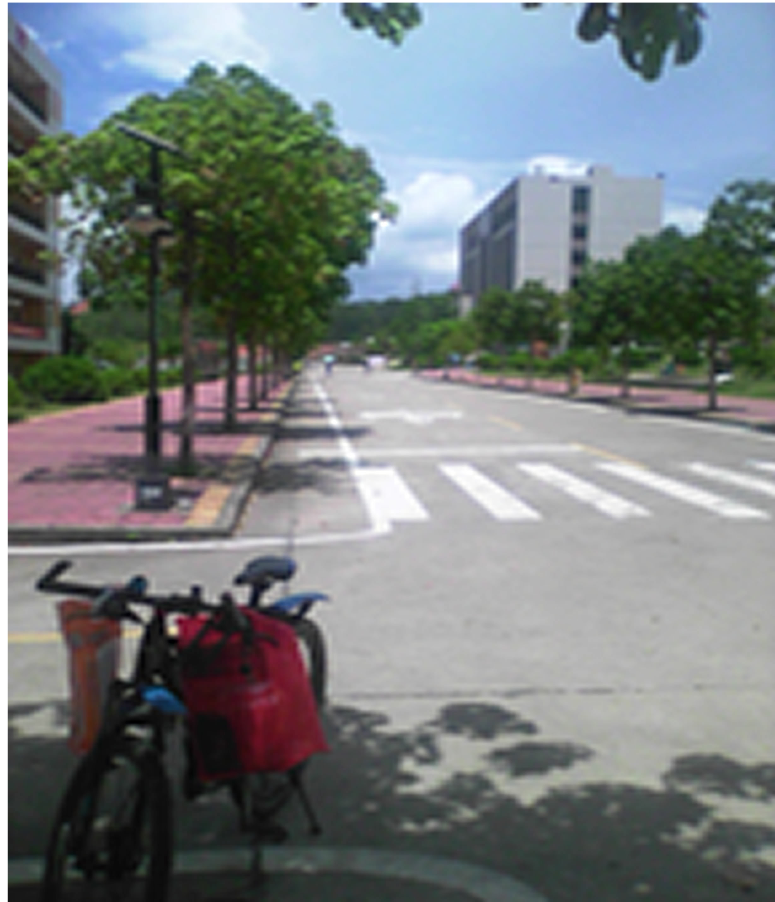
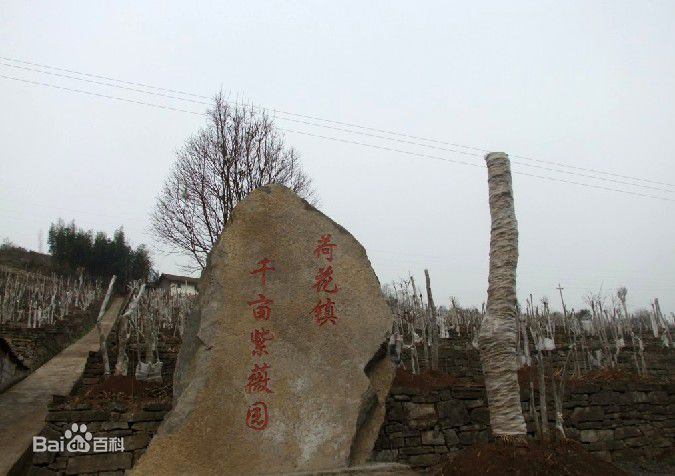
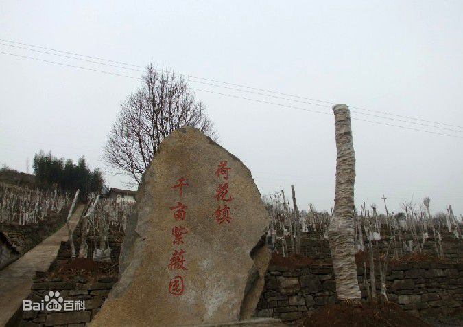

-

- 10 / 23 大家好，才是真的好。
- 11 / 15 特别感谢BMW公司的独家赞助，宝马5s，坚持与梦想者同行。
- 11 / 20 哈哈哈哈，很快完成网页了
- 11 / 25 回归正题。
- 11 / 30 昨天环校跑摔跤了，裤子破了，好痛苦。


谯国夫人，广东高凉人氏（今广东省茂名市电白区电城镇山兜村人），后嫁于当时的高凉太守冯宝（夫家位于今茂名市高州市长坡镇）。善于结识英雄豪杰，公元550年，在参与平定侯景叛乱中结识后来的陈朝先主陈霸先，并认定他是平定乱世之人，公元551年，冼太夫人协助陈霸先擒杀李迁仕。梁朝论平叛功，册封冼太夫人为"保护侯夫人"。公元557年，陈霸先称帝，陈朝立。公元558年，冯宝卒，岭南大乱，冼夫人平定乱局，被册封为石龙郡太夫人。隋朝建立，岭南数郡共举冼太夫人为主，尊为"圣母"。后冼夫人率领岭南民众归附，隋朝加封谯国夫人，去世后追谥"诚敬夫人"。
>基本信息冼夫人（522年－601年），南北朝时期高凉郡（今广东茂名电白区电城镇）俚人，为俚人杰出的女领袖和军事家。南梁宋康郡夫人、陈朝石龙太夫人、隋朝谯国夫人，谥诚敬夫人。 历代政权不但给予冼夫人封赏，而且还把冼夫人纳入官方的祀典，让其享地方官府的春秋二祭及诞祭。自隋朝初年冼夫人去世后，即“官置祠祀之”，尤其是明清两代，官府致祭不绝，据清光绪《高州府志》记载：“冼夫人庙，每岁春秋仲月二十四日及十一月二十四日诞辰。本府率官属致祭，议同名宦。” 官府祭祀还规定了一套具体的祭祀程式和礼仪，庄重虔诚。 冼氏世代均为俚人首领。冼夫人生于梁武帝初年。嫁与南梁宋康郡公高凉太守冯宝，辅佐冯宝平息了广东原住民与中原人士的冲突，促进了中原人和南越族的和解，引海南岛各族部落归附南梁，并开始设立崖州，使海南岛再次成为古代中国中央王朝设立的正式政区。按：汉武帝元鼎六年（前111年），伏波将军路博德、楼船将军杨仆等率师平定南越之乱。元封元年（前110年），在海南岛设置珠崖郡、儋耳郡。实现了汉代中央直接对海南的统治和治理。这是海南岛建立古代中国中央王朝直接管辖的正式政区的开始。 ........更多信息点这里

松山湖备案号0769110；电信备案号10000；移动备案号10086